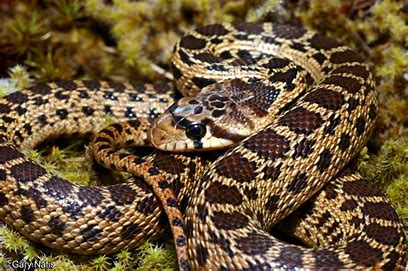
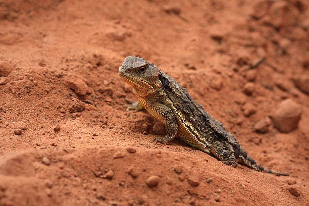
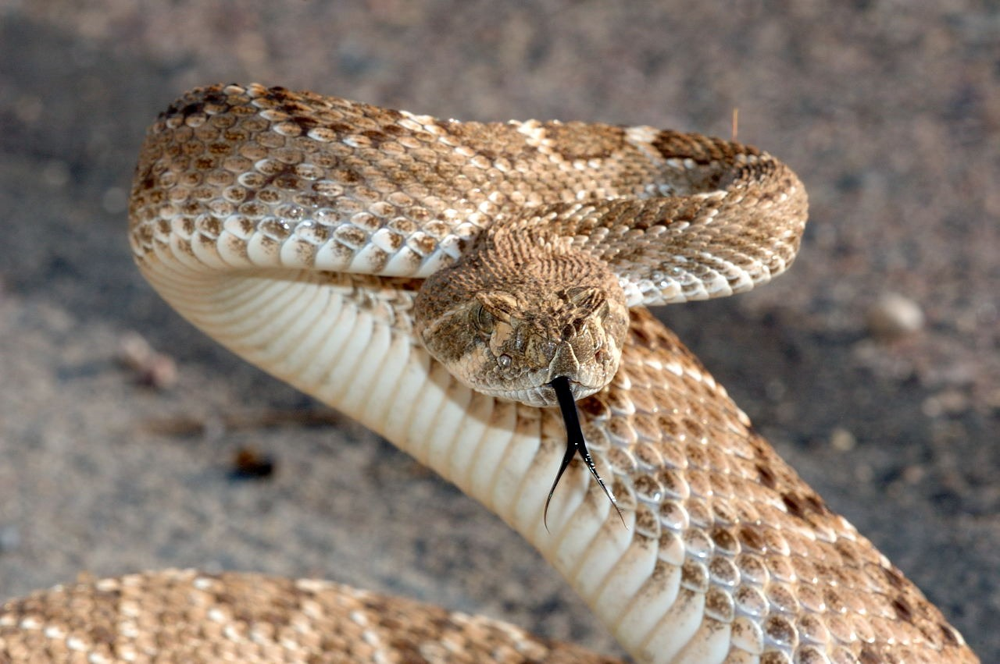

GILA MONSTER: The Gila monster is a
venomous, brightly colored lizard native to the deserts of the southwestern United States
and Mexico. Known for its slow movement and distinct orange or pink patterns.
GILA MONSTER: The Gila monster is a
venomous, brightly colored lizard native to the deserts of the southwestern United States
and Mexico. Known for its slow movement and distinct orange or pink patterns.GOPHER SNAKE: Gopher snakes are
non-venomous, ground-dwelling snakes found in North America, known for their defensive
hissing when threatened.
SHORT-HORNED LIZARD: Short-horned lizards,
also known as horny toads, are small, stout reptiles with spiny bodies and short horns on
their heads. Native to North America, they are well-adapted to desert environments.
RATTLE SNAKE: Rattlesnakes are venomous
snakes, easily recognized by the rattle at the end of their tails, which they use as a
warning sound. Found across the Americas, they are skilled hunters.
 YELLOW-BACKED SPINY LIZARD: The
yellow-backed spiny lizard is a colorful reptile native to the southwestern United States,
known for its striking yellow and blue patterns on its back.
YELLOW-BACKED SPINY LIZARD: The
yellow-backed spiny lizard is a colorful reptile native to the southwestern United States,
known for its striking yellow and blue patterns on its back.
 MOUNTAIN LIONS: Mountain lions, also known
as cougars or pumas, are large, solitary wild cats native to the Americas. They are agile
predators, known for their ability to leap great distances.
MOUNTAIN LIONS: Mountain lions, also known
as cougars or pumas, are large, solitary wild cats native to the Americas. They are agile
predators, known for their ability to leap great distances. MULL DEER: Mule deer are graceful deer species native to
western North America, easily identified by their large, mule-like ears.
MULL DEER: Mule deer are graceful deer species native to
western North America, easily identified by their large, mule-like ears.